Note that when computing the hidden states,
Get a big corpus of text, feed into the RNN-LM, and compute the output distribution
The loss function on step t is the CE loss between predicted probability distribution
In practice, computing the loss and gradients across entire corpus is too expensive, and we consider the sequence of words to use as a sentence or a document instead. We compute loss
Perplexity is equal to the exponential of the cross-entropy loss
Other Uses of RNNs
RNNs can also be used for part-of-speech tagging and named entity recognition.
RNNs can be used for sentence classification (ie. sentiment classification).
RNN can be used as an encoder module, by taking the hidden states as the encoded state.
RNN-LMs can be used to generate text, through a conditional language model.
RNNs can also be used for time-series analysis.
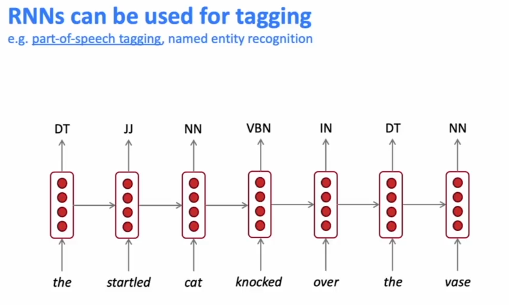
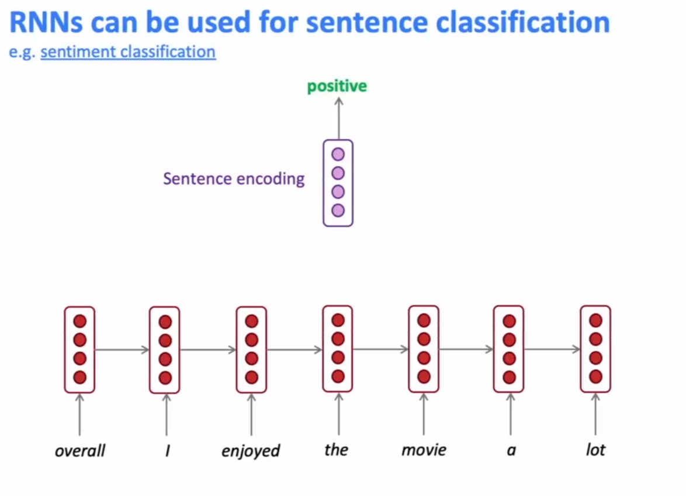
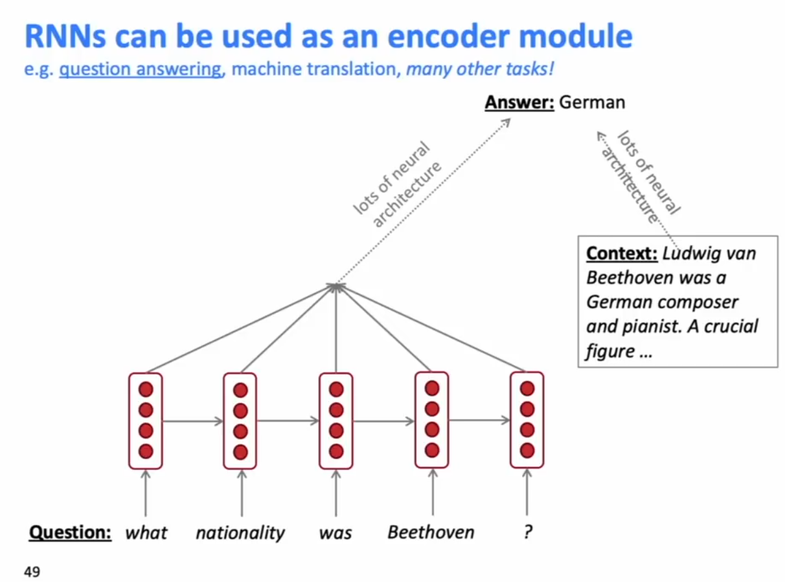
Exploding gradients make all of your parameters +Inf or NaN. Solution-
Gradient Clipping: If the norm of the gradient is greater than some threshold, scale it down to some threshold before applying SGD update. I.e. Take a step in the same direction, but a smaller step.
If
Vanishing Gradients
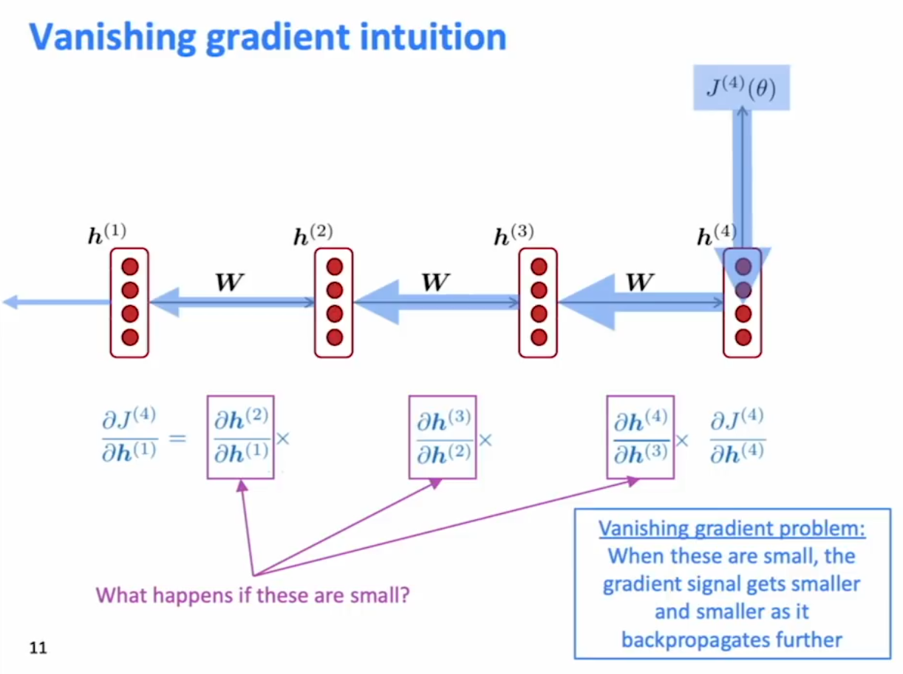
See Appendix 1 for Vanishing Gradient Proof Sketch.
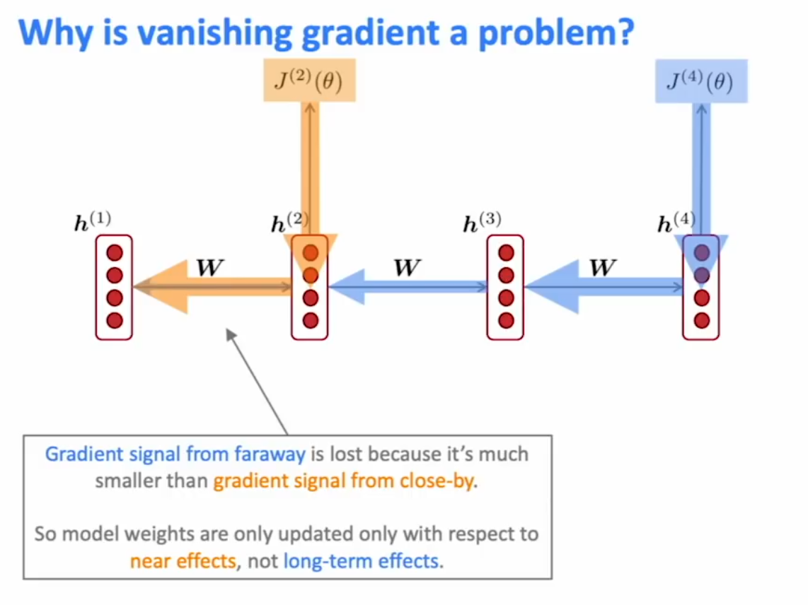
So if there is no signal from timestep t to timestep t+n, we can’t tell whether there is really no dependency between step t and t+n in the data or if we have the wrong parameters that lose gradient to capture a true dependency that is in fact there.
LSTM
LSTMs are RNNs with both a hidden state
The selection of which information is created/written/read is controlled by three corresponding gates.
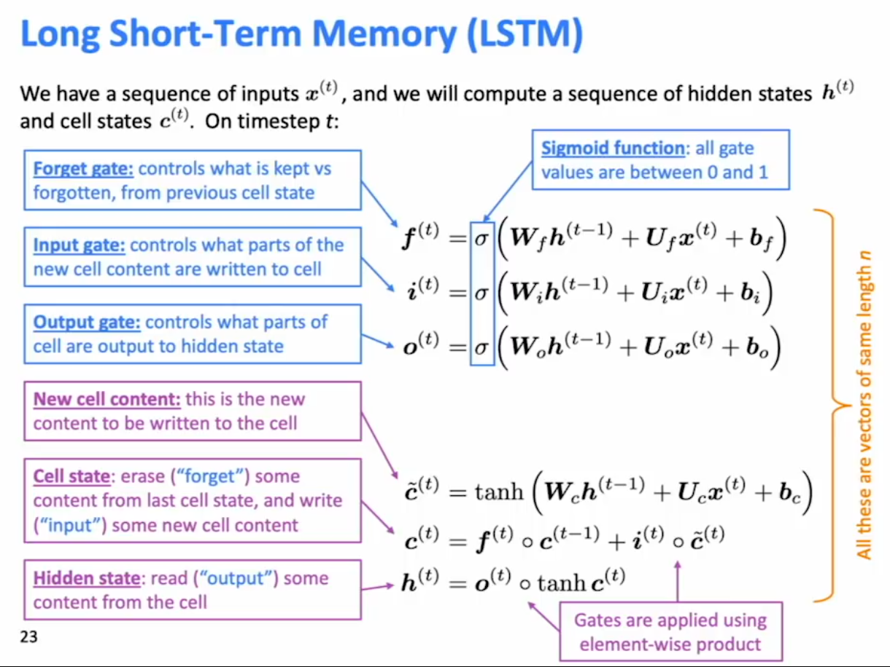
Note that the last tanh is just a nonlinearity.
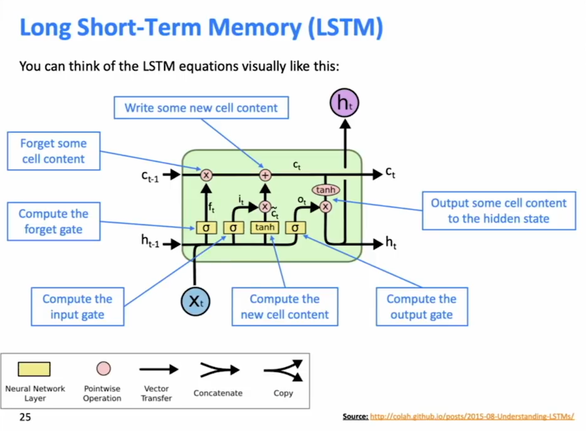
LSTMs inernals are are hard and even the TA doesn’t know the answer to all the problems. (Appendix)
LSTM makes it easlier for the RNN to preserve information over many time steps - if the forget gate is set to remember everything on every timestep, then the info in the cell is preserved indefinitely.
LSTM were SOTA in 2013-2015 in NLP. They are still SOTA in some applications but gradually replaced by Transforme
GRU
GGRU does not have the cell states, and only has the hidden states. But they still use two gates: update gate (playing the role of both input and forget gate of LSTM) and reset gate.
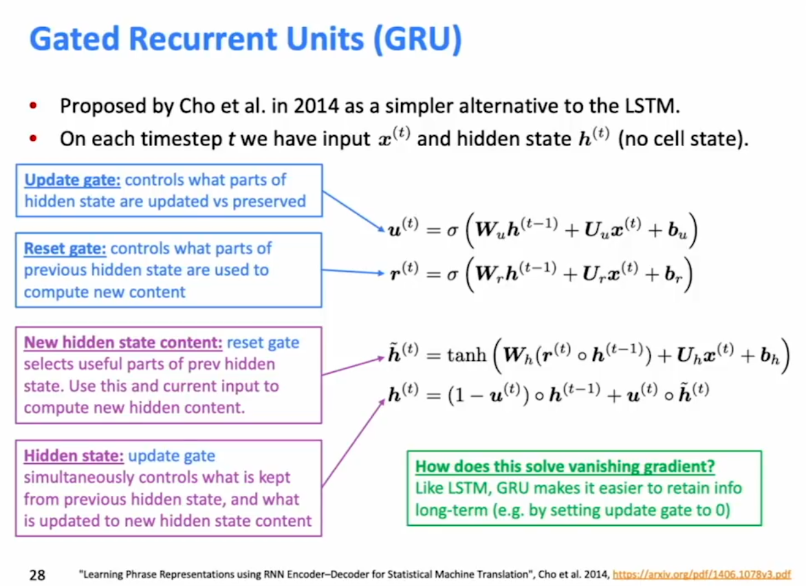
LSTM vs GRU
The biggest difference is GRU is quicker to compute and has fewer parameters, but they have similar performance. LSTM is a good default choice, but switch to GRU if you want something more efficient.
Bidirectional RNNs
Ordinary RNNs only capture encodings of the left context in the hidden state. In general it is useful to have both the left and right context. We achieve this by running two completely separate RNNs with different W matrices, one forward through the text and one backwards through the text, and concatenating their hidden states.
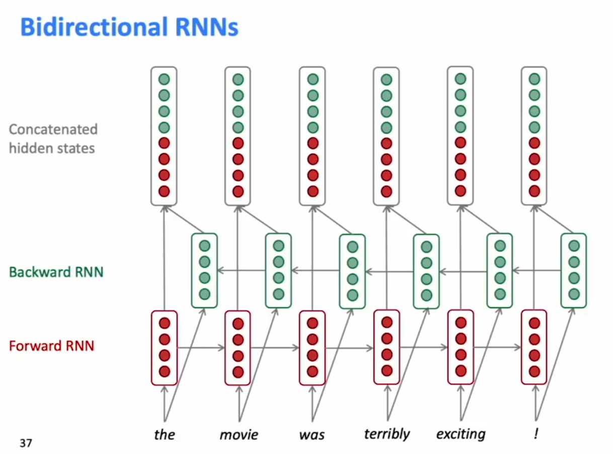
Note: You can’t use bidiectional RNNs when you don’t have reverse context, e.g. language modeling. You should use bi-directional RNNs whenever you can.
ie. BERT (Bidirectional Encoder Representaitons from Transformers) is an example of a powerful pretrained contextual representaiton system built on bidirectionally.
Multi-Layer RNNs aka stacked RNNs
The hidden states from one RNN layer are used as the inputs to the next RNN layer. The lower RNNs should compute lower level features (i.e. syntax) and the higher RNNs should compute higher-level features (i.e. semantics).
If the RNN layers are bidirectional, you would have to compute all of layer 1 before computing layer 2, but if the RNN layers are uni-directional, you can compute the deep layers and the time-steps at the same time (triangular computation, both move up and move right). Thus computing unidirectional multiple layer stacked RNNs shouldn’t take much longer than a unidirectional single layer RNN.
In general, if you are able, use bi-directional Multi-layer RNNs.
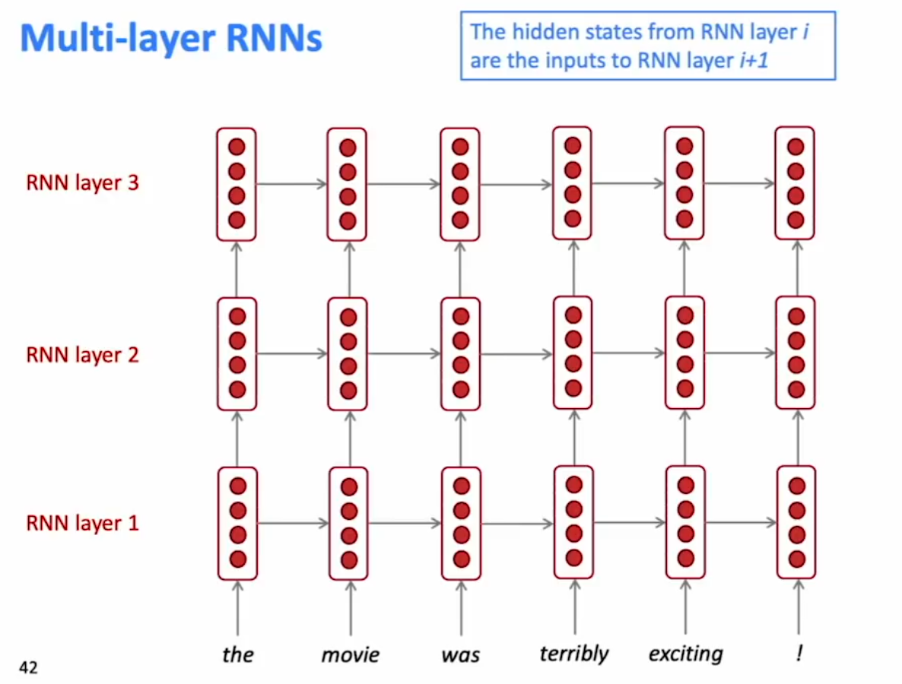
High performing RNNs are often 2 -4 layer multi-layer RNNs or 8 layer RNNs if we add skip connections. It’s hard to learn post 4 layers without skip connections. It’s also hard to get really deep RNNs is because RNNs have to be trained sequentially so training speed gets slower with each layer.
Is vanishing/exploding gradient just an RNN problem
Nope - Though RNNs tend to be more unstable because you are multiplying by the same weight matrix over and over, vanishing/exploding gradients is a problem for any deep network! Solutions:
- Residual Connections/ Skip Connection (ResNet, He et al). Note that the skip connection is added (elementwise) to the output of the weight layer, and not concatenated!
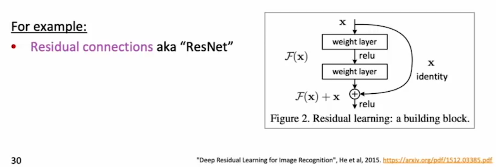
Why add and when to sometimes concatenate - form StackOverflow (the difference is less than one might think!) - Adding is nice if you want to interpret one of the inputs as a residual "correction" or "delta" to the other input. For example, the residual connections in ResNet are often interpreted as successively refining the feature maps. Concatenating may be more natural if the two inputs aren't very closely related. However, the difference is smaller than you may think. Link
- Dense Connections (DenseNet) - Add skip connections from all layers to all layers!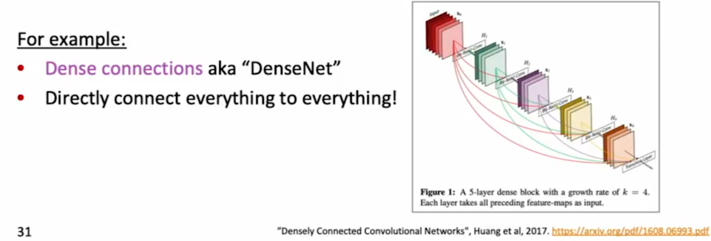
- Highway Connections (HighwayNet) - Similar to residual connections but the identity connection vs the transformation layer is controlled by a dynamic gate. Inspired by LSTMs, Highway connections are applied to deep feedforward/convolutional networks.
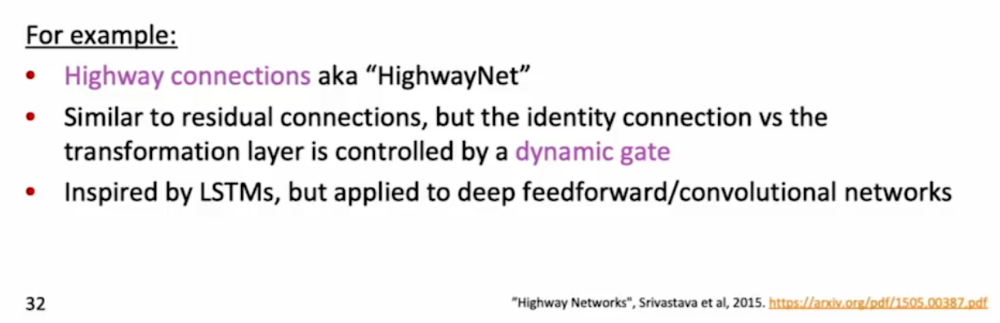
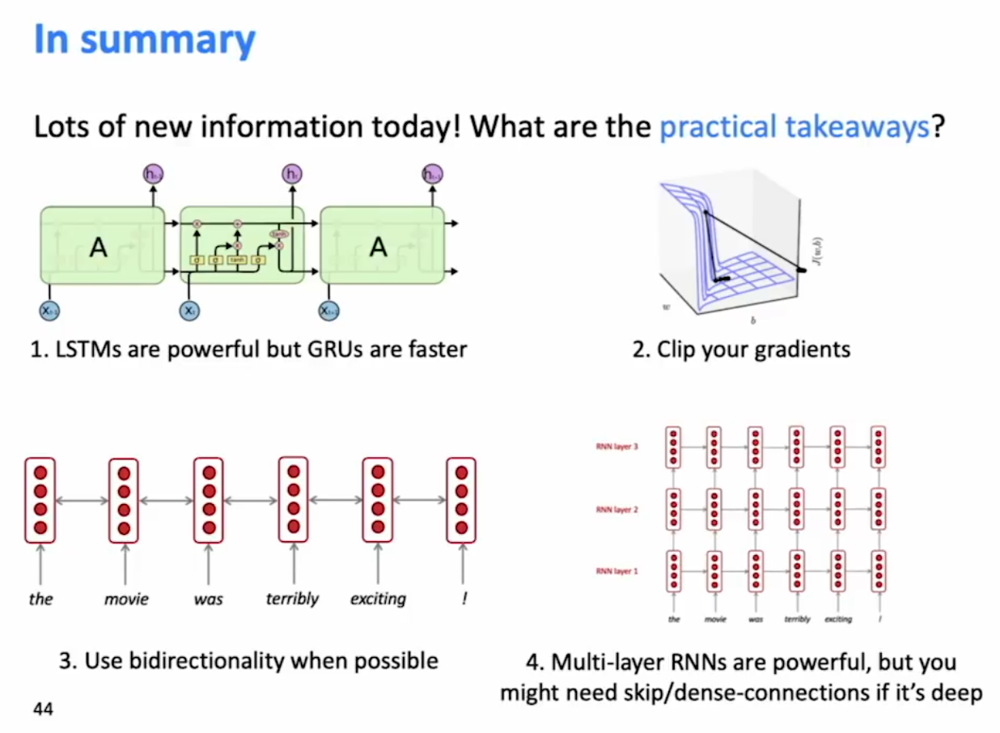
Appendices:
LSTM diagram
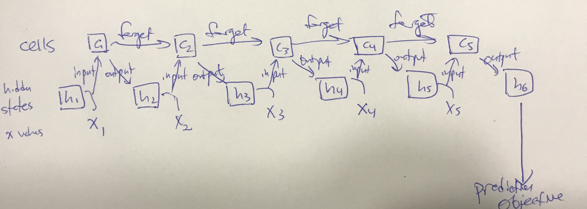
Relative insensitivity to gap length is an advantage of LSTM over RNNs. How does it achieve this? The first thing to note is that the forget gate and input gate are mostly 1. Also, in an LSTM, the cell is the primary memory store, where the recurrence happens. Each hidden state is like a derivation of the cell state.
Then the LSTM cell is like an attention layer. At cell state c_5, it might contain selected parts from hidden states h_1, h_3, and h_4, depending on what it has chosen to forget. The subspaces of the cell state that are not forgotten are carried forward (identity) to the last cell state, so there is no loss of backprop signal. The LSTM learns (in its cell states) “what is the compilation of previous hidden states do I need to remember to generate the next output”?
The LSTM roughly captures: "Whenever I see a particular phrase or some linguistic phenomenon a, I must remember it and carry over its signal to where I will use it, and whenever I see somethign else b I will remember it, and when I see c, presumably I have used a and b and will forget them.
Another more convoluted way to put it is: The cell states are the ‘primary’ parts of the memory unit where the recurrence happens, the hidden states are reflections of the cell state. The cell state ‘accumulates’ information and passes it down to future cell states through the ‘Constant Error Carousel’, which is basically the forget gate. As the forget gate is usually 1 except for parts that are learned to be forgotten, the parts that are not forgotten are carried forward with no loss of signal on the backprop. (Indeed, vanilla LSTMs don't have a forget gate and instead add an unchanged cell state (e.g. a recurrent connection with a constant weight of 1). This addition is called the Constant Error Carousel because it solves the training problem of vanishing and exploding gradients. )
Some notes about LSTM:
- The forget gate is actually irrelevant and not very useful. To have a forget gate and an output gate is a bit overkill.
- If you have vanishing gradients, any gradient g + 0 is still g, so you still retain the local updates. However, if gradients explode, all of them do. That is because some gradient g + infinity is infinity. That is the reason why LSTM does not protect you from exploding gradients, since LSTM also uses a recurrent weight matrix, not only internal state-to-state connections. So successful LSTM applications typically use gradient clipping.
- Note that the forget gate in actuality is not always 1, and the amount of long0term information lost at each time step is the value of the forget gate. If the forget gate is close to 0, we get a vanilla RNN that loses long-term dependencies. So the forget gate must be well initialized.
- LSTM training should be not too much slower than vanilla RNN training, because the complexity of the model increased in space, but the time compelxity is still a matmul (on a much bigger matrix, see the big W which captures the candidate cell state, and all three gates which can be all computed at once on my derivation pic above), some linearities, and a non-linearity.
What about GRUs
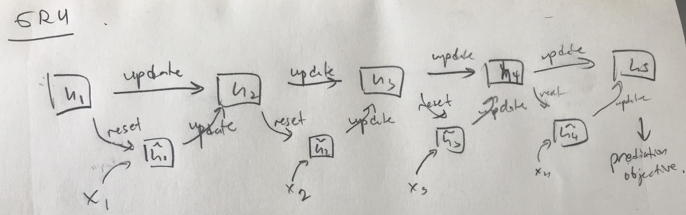I said that the forget gate is actually unnecessary. The 300-dim space is enough to capture all saved concepts without ever needing to ‘forget’ them to ‘free up space’. In addition, it’s a bit cluttered to have a separate ‘cell’ and to have a hidden state as a derivation of the cell. We can just directly use the hidden state as the cell.
So, in the GRU equations
The key part of the GRU is the 4th equation, where some parts of the last hidden state are carried forward (letting us push backprop over logn-term info if the gates remain 1 over the time period of the dependency) and other parts are written over.
The 2nd equation above learns, for each hidden state and new content, what parts to write over to fit into a new subspace and not overwrite any previous content.
You may think, okay, the update gate in the GRU handles the input gate and the forget gate, and the reset gate handles the ourput gate in the LSTM. But why have a reset gate at all. Isn’t the forget gate (aka GRU update gate) enough to do all the updates? Who cares, becasue the subspace will not get that cluttered - it is huge - why do we need to overwrite any information as per reset gate anyways?
Indeed, this is true. Both Arxiv https://arxiv.org/pdf/1804.04849.pdf and Reddit https://www.reddit.com/r/MachineLearning/comments/7x72h6/d_why_reset_gate_in_gru/ Confirm that you can just have an LSTM/GRU with only a forget (GRU update) gate, and it will work great. So the reset gate is more for theoretical properties, not super important.
The wider implications of these thoughts to AI
AI models can learn not only representations of objects or states, but also of sequences of those objects or states, or to put it another way, a transformation that turns one object into the next. But sequences are vital to planning and decision-making. That process would include:
(1) Embedding of possible states of being into an embedding space
(2) Playing out most likely sequences of events (with e.g beam search), with the transition function learned from experience.
(3) Making decisions based on these sequences’ end states or side-effects given some reward function.
Where we are far away from AI currently is
(1) Capturing long-long-term dependency information (This must be stored somewhere in persistent memory and there must be some trigger to take it out when it is needed)
(2) Representing complex and compositional events or states or objects, and the interactions of events on objects.
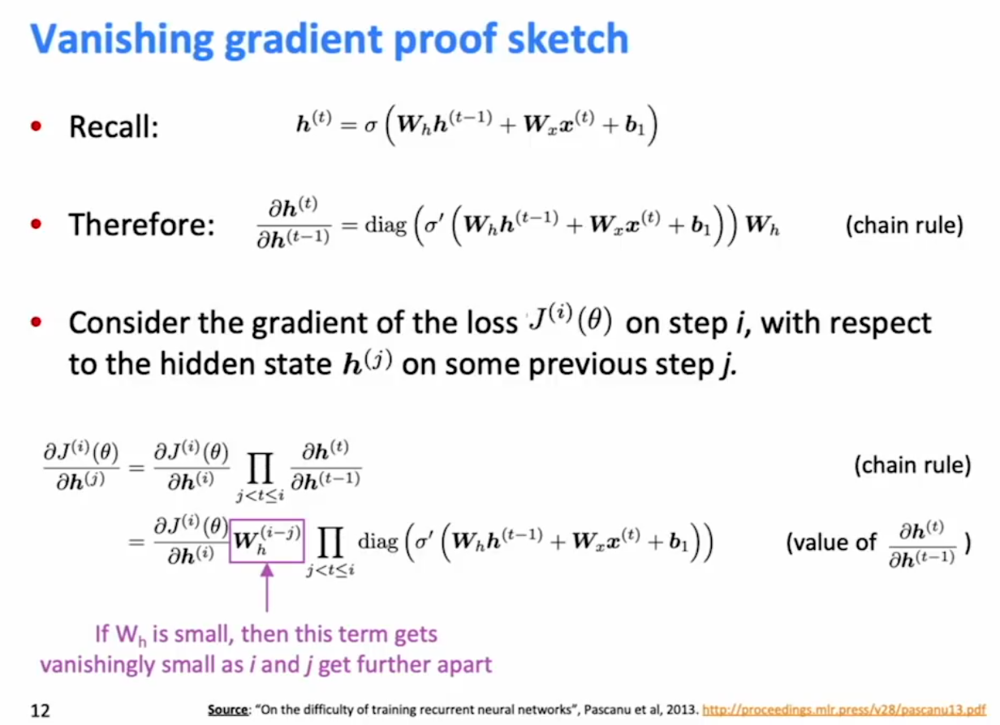
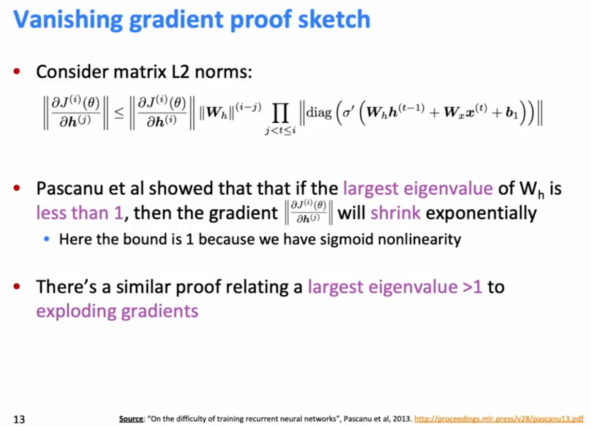